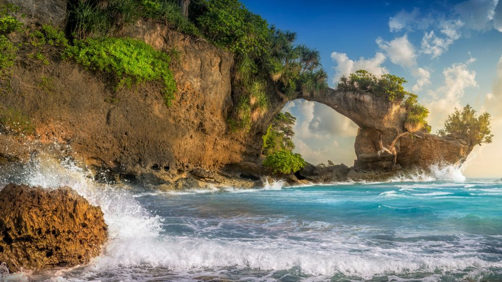
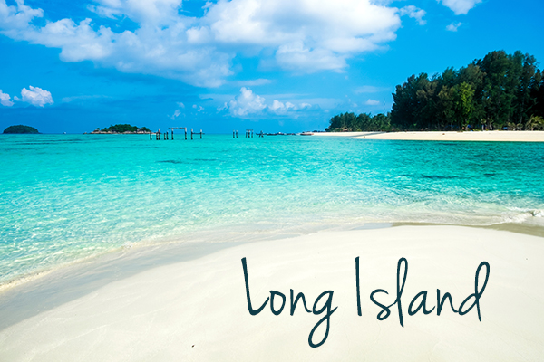
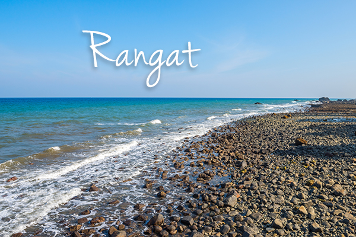
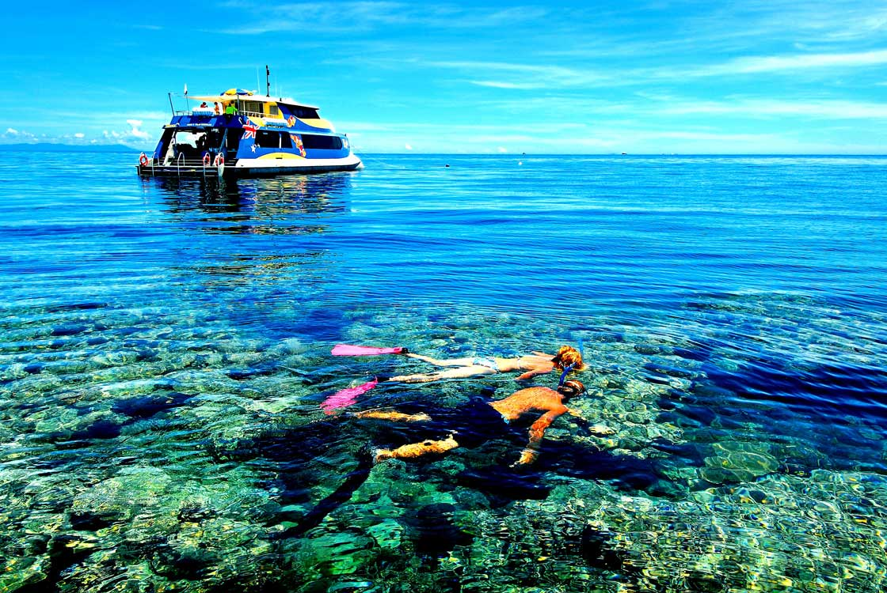
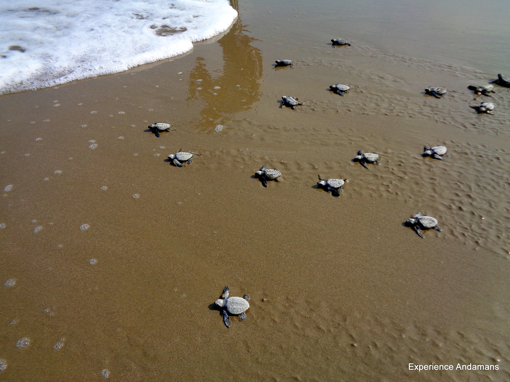
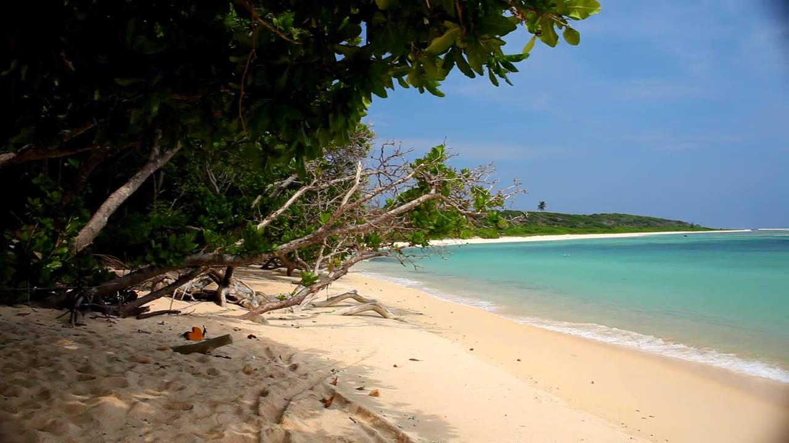
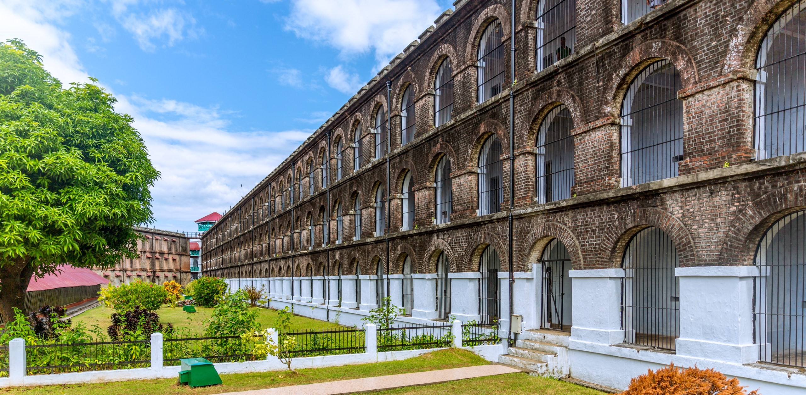

Also known as the vegetable bowl of the Andamans, this is an island filled with sandy beaches and dense green forest. Being one of the ideal holiday destinations for nature-loving tourists, the island has weekly four days boat connectivity from Port Blair. The Hawabill Nest guesthouse, under the Directorate of Tourism, provides one of the best accommodation, and one can enjoy the village life here with its serenity and calmness. Some of the main attractions here include the Howrah Bridge, which is the sea-shore bridge formation, and the beautiful beaches of Bharatpur, Sitapur, and Laxmanpur.

This island is famous for its pollution-less environment, evergreen forests and a beautiful beach at Lalaji Bay. It has boat connectivity from Phoenix Bay Jetty four days a week. One can get frequent views of dolphin convoys also. One can reach Lalaji bay which is about 6 km from boat jetty, by forest trekking or fifteen minutes journey in dinghies. Camping is also made available by the Directorate of Tourism during the season.

This is the best place to get away from the city pollution and feel the unpolluted air, enjoy the serene village life and the beauty of mother nature. Twenty kilometers from Rangat jetty lies the Culbert Bay beach which is a nesting ground for turtles, which predominantly takes place during December-February season. The Hawksbill Nest (the Directorate of Tourism guest house), is near to the Turtle sanctuary and the Cuthbert bay beach. On the way to the Cuthbert, beaches are the Amkunj beach and the Panchavati waterfall. Diglipur and Mayabunder are easily accessible from here.

Being one of the most famous islands of the Andamans, Havelock Island has its main highlights as snorkeling and premium scuba diving. One can get the up-close marine life experience using the Glass-bottomed boats. While some prefer to enjoy the multiple luxury resorts, others enjoy popular landlubbing activities including camping and jungle treks. One can refresh and replenish oneself with fresh coconut milk and juicy, freshly caught seafood which tastes heavenly.

Diglipur is located in the North Andaman Island. Being famous for its oranges, rice & aquatic life, it gives an unforgettable experience to the nature-loving tourists. The highest point in the islands, the Saddle Peak (732 meters), is situated nearby. The one and only river of Andaman, Kalpong, where the 1st hydro-electric project of the island is coming up, flows from here. For my road travelers from Port Blair, one has to first take a boat from Mayabunder to Kalighat and from there, one has to travel by road to Diglipur (which is nearly 25 km) and from there to Kalipur (nearly 18 km) to get the beautiful sights of the Kalipur & Lamiya bay beaches. Turtle Resort, Kalipur(by the Directorate of Tourism) provides comfortable accommodation. For water sports lovers, the Water Sports Centre is located nearby. Trekking lovers can also trek to Saddle Peak for which trekking equipment can be hired from the Turtle Resort. They can start trekking from Kalipur. Turtle nesting can be enjoyed during December-February season at the Ram Nagar beach which is famous for this and is located 15 km away from Kalighat. Near Diglipur & Kalipur is the Aerial bay jetty, which can be reached from Port Blair via boat.

This island is famous for a beautiful beach located at the Butler Bay, oil palms plantation and a waterfall. Also, along with the coastline of the island, there are multiple sandy beaches. Tourists can get a splendid view of the breakwater at Hut Bay which soothes their eyes. This island is kind of a vegetable bowl for the Nicobar group of islands. The main inhabitants of this island include the Onge tribals, the Nicobarese, settlers from erstwhile East Pakistan and other places but the tribal area entry is restricted. One can reach here by traveling eight hours from Port Blair towards the south by sea.

Also known as 'Kala Paani', the Cellular Jail located in Port Blair, is the most famous attraction of Andaman and Nicobar Islands. After the revolt of 1857, Andaman has been used to keep prisoners, though it was not until 1896 that the prison was started and became operational only in 1906. The Jail was constructed out of bricks bought from Myanmar (‘Burma’ that time). Being one of the highest security jails in India at that time, it also had a very well thought out architecture. There were in total seven wings, a watchtower being at the center from where guards kept a tight watch on the inmates. The size of these buildings is extraordinary and will leave anyone amazed. As time progressed, many of the wings were destroyed and the wings which were left including the central tower were converted into a national memorial in the year 1969. Presently, a hospital named Govind Ballabh Pant Hospital is also there inside the premises of the jail which has a 500-bed capacity and was started in the year 1963. The light & sound show organized at the evening time is the prime tourist attraction of the cellular jail. The long history of the jail and the Andaman islands is beautifully narrated by the show.